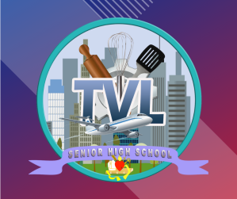

TVL
TVL Strand is designed to develop students' skills that is useful for livelihood and technical projects. It provides a curriculum that is a combination of Core Courses and specialized hands-on courses that meets the competency-based assessment of TESDA.
